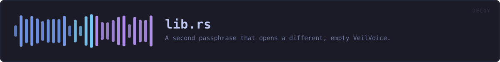

crates/veilvoice-decoy/src/lib.rs
veilvoice-decoy · 466 lines · read the source here · or on GitHub
A second passphrase that opens a different, empty VeilVoice.
What this is for, and what it is honestly worth
Somebody can be made to unlock a program. A decoy passphrase gives them something true to say: it opens VeilVoice, the application works, and there is nothing in it.
It does not give you deniability, and anyone who tells you otherwise is selling something. VeilVoice is open source. This file is published. An adversary who knows what they are looking at knows the feature exists, can read exactly how it works, and can simply ask for the other passphrase. What a decoy buys is a way to comply without revealing; what it does not buy is any argument that there is nothing more to reveal. SCOPE says that in the words a front end must show, and it is the most important thing this crate produces.
The destructive duress passphrase is deliberately not here
The roadmap asked for two things: a decoy, and a duress passphrase that destroys data. The second is not shipped, and WHY_NO_DESTRUCTION is the reason in full. In short: VeilVoice cannot promise a file is gone.
On flash storage a write does not overwrite. The controller maps a logical block to a new physical page and leaves the old one holding the data until it is garbage-collected, which may be minutes or may be never, and no program running as an ordinary user can reach it. This project already documents that about its own secure-erase feature and refuses to overstate it there.
A destructive duress passphrase would be believed in exactly the situation where being wrong costs the most. Somebody types it expecting the recordings to be gone; the ciphertext is still in unmapped pages; and they then behave as though it is not. A control people rely on and that does not work is worse than no control at all. So there is not one.
Typing the wrong one by mistake
The other failure the roadmap named, and the reason this shape was chosen. Because the decoy destroys nothing, typing it by accident costs a relaunch and nothing else. There is no state to recover and no decision that cannot be taken back. That is not a happy accident; it is why the destructive design was rejected rather than made safer.
Both passphrases are checked the same way
Which one matched must not be visible in how long the check took. Both are derived with the same Argon2id parameters and compared in constant time, and both are always derived even when the first one matches: returning early would make a real passphrase measurably faster than a decoy, which tells an observer with a stopwatch which of the two they just watched somebody type.
In plain words
You can set a second passphrase. Typing it opens VeilVoice normally, except that it is empty: no recordings, no projects, no history. It is there for the situation where somebody is standing over you asking you to unlock your computer.
Two honest warnings, and please read them.
It does not hide the fact that a second passphrase might exist. This program's source code is public and this feature is described in it, so anybody who recognises VeilVoice can ask you for the other one. It buys you a way to hand something over. It does not buy you an argument.
And there is no passphrase that destroys your recordings, deliberately. On modern storage, deleting a file does not reliably remove it, so a feature that claimed to would be lying to you at the worst possible moment.
WHAT THIS FILE CONTAINS
466 lines defining 9 functions (4 public), 4 types and 3 constants. Everything below is read out of the source, so it cannot disagree with the code.
The types it owns.
enum Openedline 78 · Which passphrase was given.struct Pairline 92 · A pair of passphrase verifiers, checked together.struct Verifierline 100 · One passphrase's stored form.enum Refusedline 143 · Why a pair was refused.
What happens when it runs. These are the ways in: public, and nothing else in this file calls them, so they are what an outside caller reaches first.
Pair::only_realline 200 · A real passphrase with no decoy.
reachescreatePair::with_decoyline 216 · A real passphrase and a decoy.
reachescreate,differencesPair::has_decoyline 242 · Whether a decoy is set at all.Pair::openline 253 · Which passphrase this is.
WHAT CALLS WHAT
The functions this file defines, and the calls between them. An edge means the callee's name appears, called, inside the caller's body. This is a syntactic reading, not a type-resolved one.
The same graph as Mermaid source
%%{init: {"theme":"base","themeVariables":{"background":"#1a1b26","primaryColor":"#1f2335","primaryTextColor":"#c0caf5","primaryBorderColor":"#7aa2f7","secondaryColor":"#16161e","tertiaryColor":"#16161e","lineColor":"#737aa2","textColor":"#c0caf5","mainBkg":"#1f2335","nodeBorder":"#7aa2f7","clusterBkg":"#16161e","clusterBorder":"#2f3549","fontFamily":"ui-monospace, SFMono-Regular, Consolas, monospace","fontSize":"14px"}}}%%
flowchart TD
n_create["Verifier::create<br/>line 106"]
n_matches["Verifier::matches<br/>line 116"]
n_constant_time_eq["constant_time_eq<br/>line 123"]
n_fmt["Refused::fmt<br/>line 160"]
n_differences["differences<br/>line 186"]
n_only_real(["Pair::only_real<br/>line 200"])
n_with_decoy(["Pair::with_decoy<br/>line 216"])
n_has_decoy(["Pair::has_decoy<br/>line 242"])
n_open(["Pair::open<br/>line 253"])
n_matches --> n_constant_time_eq
n_only_real --> n_create
n_with_decoy --> n_create
n_with_decoy --> n_differences
click n_create href "https://github.com/tilas01/veilvoice/blob/main/crates/veilvoice-decoy/src/lib.rs#L106" "open the source"
click n_matches href "https://github.com/tilas01/veilvoice/blob/main/crates/veilvoice-decoy/src/lib.rs#L116" "open the source"
click n_constant_time_eq href "https://github.com/tilas01/veilvoice/blob/main/crates/veilvoice-decoy/src/lib.rs#L123" "open the source"
click n_fmt href "https://github.com/tilas01/veilvoice/blob/main/crates/veilvoice-decoy/src/lib.rs#L160" "open the source"
click n_differences href "https://github.com/tilas01/veilvoice/blob/main/crates/veilvoice-decoy/src/lib.rs#L186" "open the source"
click n_only_real href "https://github.com/tilas01/veilvoice/blob/main/crates/veilvoice-decoy/src/lib.rs#L200" "open the source"
click n_with_decoy href "https://github.com/tilas01/veilvoice/blob/main/crates/veilvoice-decoy/src/lib.rs#L216" "open the source"
click n_has_decoy href "https://github.com/tilas01/veilvoice/blob/main/crates/veilvoice-decoy/src/lib.rs#L242" "open the source"
click n_open href "https://github.com/tilas01/veilvoice/blob/main/crates/veilvoice-decoy/src/lib.rs#L253" "open the source"
classDef entry fill:#1f2335,stroke:#7aa2f7,color:#c0caf5
class n_only_real,n_with_decoy,n_has_decoy,n_open entry
classDef helper fill:#1f2335,stroke:#bb9af7,color:#c0caf5
class n_create,n_matches,n_constant_time_eq,n_fmt,n_differences helperThis site loads no third-party script, so it cannot run Mermaid; the diagram above is the same nodes and edges drawn by the generator instead. GitHub renders the source below directly.
ITEMS
| Item | Line | Documentation |
|---|---|---|
Opened pub enum | 78 | Which passphrase was given. |
Pair pub struct | 92 | A pair of passphrase verifiers, checked together. |
Verifier struct | 100 | One passphrase's stored form. |
Verifier::create fn | 106 | |
Verifier::matches fn | 116 | Derive and compare. |
constant_time_eq fn | 123 | Compare without letting the time taken depend on where they differ. |
LEAST_DIFFERENCE pub const | 139 | How similar two passphrases may be before the pair is refused. |
Refused pub enum | 143 | Why a pair was refused. |
Refused::fmt fn | 160 | |
differences fn | 186 | How many positions two passphrases differ in. |
Pair::only_real pub fn | 200 | A real passphrase with no decoy. |
Pair::with_decoy pub fn | 216 | A real passphrase and a decoy. |
Pair::has_decoy pub fn | 242 | Whether a decoy is set at all. |
Pair::open pub fn | 253 | Which passphrase this is. |
SCOPE pub const | 277 | What a decoy is worth, in the words a front end must show. |
WHY_NO_DESTRUCTION pub const | 290 | Why no passphrase destroys anything, and why that is the honest choice. |